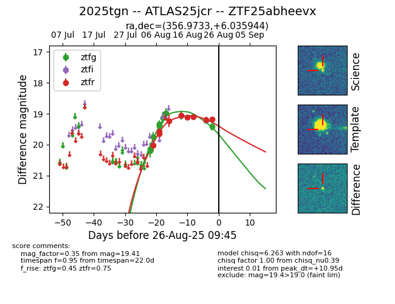

Target 2025tgn at 2025-08-26 09:45, see:
FINK: fink-portal.org/ZTF25abheevx
Lasair: lasair-ztf.lsst.ac.uk/objects/ZTF25abheevx
ALeRCE: alerce.online/object/ZTF25abheevx
TNS: wis-tns.org/object/2025tgn
YSE: ziggy.ucolick.org/yse/transient_detail/2025tgn
alt names
ZTF25abheevx (ztf,fink)
2025tgn (tns,yse)
ATLAS25jcr (atlas)
coordinates:
equatorial (ra, dec) = (356.9733,+6.03594)
galactic (l, b) = (95.7345,-53.44675)
photometry
last ztfg=19.41, ztfr=19.18
12 ztfg, 9 ztfr detections
